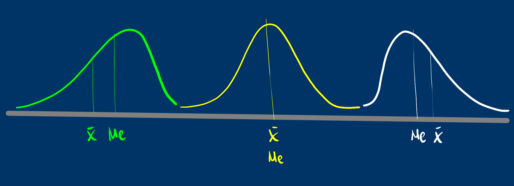
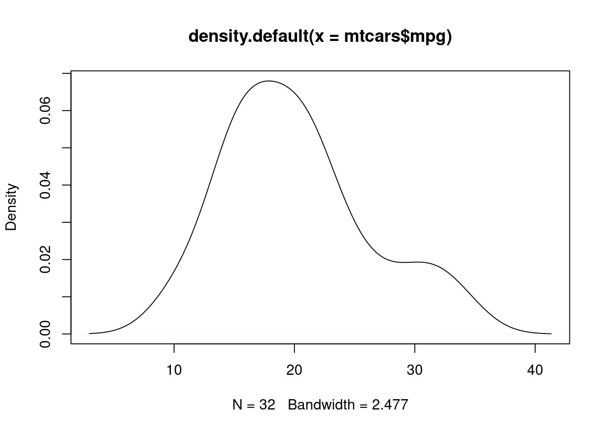

Tablas de frecuencia e indicadores estadísticos
Modulo 1- Unidad 1.2
dgonzalez
Guía de aprendizaje 1.2

Introducción
El Análisis Descriptivo permite examinar información contenida en una base de datos, procesarla y mediante la construcción de tablas, indicadores y gráficos y con esto elementos realizar un primer análisis de la información, permitiendo así tener una primera impresión de lo que dicen los datos, con la cual se pueden construir hipótesis que luego podrán ser verificadas.
En este proceso es importante conocer el tipo de variable ( cualitativa o cuantitativa) y su tipo de escala (nominal, ordinal en el caso de las cualitativas o de intervalo, de razón en el caso de las cuantitativas), con fin de seleccionar la manera adecuada de construir tablas que resuman la información e indicadores en cada caso.
En esta unidad se tratara en primer lugar el resumen de información mediante tablas de frecuencia y en una segunda parte lo relacionado con los indicadores de posición, centro o tendencia, dispersión e indicadores de forma.
Objetivos de la unidad
Al finalizar esta unidad el estudiante estará en capacidad de RESUMIR e INTERPRETAR información mediante la construcción de TABLAS DE FRECUENCIA, INDICADORES DESCRIPTIVOS que permitan un correcto análisis de datos.
Duración
La presente unidad será desarrollada durante la segunda semana del semestre ( 31 de enero al 06 de febrero de 2022). Ademas del material suministrado contaran con el acompañamiento del profesor en dos sesiones (lunes, miércoles y viernes) y de manera asincrónica con foro de actividades académicas. Los entregables para esta unidad deberán enviarse a través de la plataforma Brightspace hasta el 06 de febrero.
Para alcanzar los objetivos planteados se propone realizar las siguientes actividades
Cronograma de trabajo
| Actividad103 | Descripción |
|---|---|
| Trabajo individual | Actividad 103 - Caso 101 : Realice las actividades consignadas en el caso101, adjunte y envíe las respuesta a la plataforma de Brightspace en formato pdf |
| Recursos | Video indicadores estadísticos |
| Vídeo calculo indicadores con tablas de distribución | |
| Fecha | 06 de febrero de 2022 |
| Hora | 23:59 |
| Actividad104 | Descripción |
|---|---|
| Trabajo individual | Actividad 104 : A partir de la información contenida en la base de datos seleccionada en la Actividad 102, realice un análisis de al menos dos variables cualitativas y dos cuantitativas teniendo como soportes las tablas de frecuencia y los indicadores estadísticos correspondiente. |
| Recursos | Base de datos actividad-1 Unidad 1.1 |
| Excel | |
| RStudio | |
| Código u1.2 | |
| Fecha | 06 de febrero 2022 |
| Hora | 23:59 hora local |
Criterios de evaluación
Reconocer e interpretar las diferentes formas de resumir los datos a través de tablas de frecuencia para los casos de variables cuantitativas y para variables cualitativas.
Calcular e interpretar los diferentes indicadores de posición, tendencia, dispersión y forma que permitan un correcto análisis de los datos
Utilizar herramientas computacionales para el procesamiento de la información.
Los entregables completos y enviados dentro de los tiempos establecidos otorgarán 25 puntos en cada caso, para un total de 50 puntos.
Entregables
| Entregable | Descripción |
|---|---|
| Entregable 1: | Actividad103.pdf : Caso 101 |
| Entregable 2: | Actividad104.pdf : Aplicar lo aprendido a base de datos actividad102 |
| Fecha | Domingo 06 de febrero de 2022 |
| Hora límite | 23:59 hora local |
Presentaciones
Caso de estudio 101
Caso de estudio : CARACTERISTICAS DE LA CERVEZA
La siguiente información recoge cinco de las principales características de un grupo de marcas de cerveza que fue recogida con la finalizad de clasificar los productos y además permita realizar un análisis descriptivo de las 69 marcas recogidas
Inicialmente el director de investigación desea su apoyo en una primera etapa del análisis que consiste en resumir la información suministrada en tablas e indicadores que le permitan validar algunas de sus hipótesis.
La base compartida contiene información sobre 69 marcas de cervezas que son distribuidas en la ciudad. Las variables recogidas corresponden a:
precio de la presentación en caja de seis botellas de 12 onzas,
contendo de calorias congtenidas en una unidad de 12 onzas,
porcentaje de contenido de alcohol por 12 onzas de contenido,
tipo de cerveza (1-lager artesanal, 2-clara artesanal, 3-lager importada, 4-cerveza normal y helada, y 5-cerveza baja en calorías y sin alcohol) y
país de origen (1-nacional, 2- importada).
Su trabajo consiste en escribir un primer informe basado en una evaluación descriptiva, que contenga las tablas que resumen la información para cada variable de base de datos y resumen de sus indicadores estadísticos.
Finalmente adjunte un análisis de los resultados obtenidos.
| Producto | Precio | Calorías | Alcohol | Tipo | Origen |
|---|---|---|---|---|---|
| c1 | 6.24 | 159 | 5.2 | 1 | 1 |
| c2 | 4.49 | 160 | 5.0 | 1 | 1 |
| c2 | 5.96 | 160 | 4.9 | 1 | 1 |
| … | …….. | ………… | ………. | …….. | …….. |
| … | …….. | ………… | ………. | …….. | …….. |
Recursos
¿Que es un indicador?

Cuando nos subimos a un auto observamos un tablero con muchos indicadores que permiten al conductor validar el estado del vehículo. Todos los podemos visualizar al tiempo con el fin de darnos una idea del nivel de combustible, la temperatura, el estado de la batería, si alguna puerta esta abierta, la velocidad a la que se viaja, entre otros.
Al igual que la situación anterior cuando nos enfrentamos a una análisis de datos, requerimos resumirlos en indicadores, tablas y gráficos que nos permitan un fácil análisis de ellos
Tablas de frecuencia
Tablas de frecuencia para variables cualitativas
| Categorías (c1) | frecuencia absoluta (c2) | frecuencia relativa (c3) |
|---|---|---|
Las distribuciones de frecuencia o también llamadas tablas de frecuencia nos sirven para agrupar los datos y así permitir resumir para poder tener una idea mas clara de sus características.
Para las variables cualitativas la tabla posee 3 columnas :
c1: los diferentes valores que toma la variable.
c2: frecuencia absoluta que consiste en el conteo para cada uno de los valores distintos que toma la variable.
c3: frecuencia relativa que corresponde al porcentaje la cantidad de datos para cada los valores
# Forma simple
data.frame(table(bpe$carrera)) Var1 Freq
1 Biología 13
2 Ingeniería Civil 13
3 Ingeniería de Sistemas 18
4 Ingeniería Electrónica 8
5 Ingeniería Mecánica 15
#utilizando summarytools
library(summarytools)
t1=freq(bpe$carrera, cumul = FALSE, headings = FALSE)
t1
Freq % Valid % Total
---------------------------- ------ --------- ---------
Biología 13 19.40 19.40
Ingeniería Civil 13 19.40 19.40
Ingeniería de Sistemas 18 26.87 26.87
Ingeniería Electrónica 8 11.94 11.94
Ingeniería Mecánica 15 22.39 22.39
<NA> 0 0.00
Total 67 100.00 100.00Nota: paquete summarytools
Tablas de frecuencia para variables cuantitativas
Para las variables cuantitativas las tablas de frecuencias tiene una presentacion diferente a la vista anteriormente. Como se trata de variables con una gran numero de valores diferentes, es necesario dividirlas por intervalos .
library(agricolae)
h2=with(bpe,graph.freq(promedio,plot=FALSE));t2=table.freq(h2);
colnames(t2) = c(" LI ", " LS ", "marca clase'", "Frec.Abs","Frec.Rel", "Frec.Abs.Ac","Frec.Rel.Ac")
t2 LI LS marca clase' Frec.Abs Frec.Rel Frec.Abs.Ac Frec.Rel.Ac
1 3.3 3.5 3.4 7 10.4 7 10.4
2 3.5 3.7 3.6 7 10.4 14 20.9
3 3.7 3.9 3.8 7 10.4 21 31.3
4 3.9 4.1 4.0 12 17.9 33 49.3
5 4.1 4.3 4.2 15 22.4 48 71.6
6 4.3 4.5 4.4 13 19.4 61 91.0
7 4.5 4.7 4.6 6 9.0 67 100.0Frec.Abs : Frecuencia absoluta
Frec.Rel : Frecuencia relativa
Frec.Abs.Ac : Frecuencia Absoluta Acumuada
Frec.Rel.Ac : Frecuencia Relativa Acumulada
library(stringr)
data("iris")
t1=freq(iris$Species, cumul = FALSE, headings = FALSE)
t1
Freq % Valid % Total
---------------- ------ --------- ---------
setosa 50 33.33 33.33
versicolor 50 33.33 33.33
virginica 50 33.33 33.33
<NA> 0 0.00
Total 150 100.00 100.00
Rango percentil
Es un número que divide la muestra en dos partes. \(x\) % de los datos de la muestra son iguales o menores que \(P_x\) y un \((100-x)\) % por encima de el.

Para ilustrar el concepto, pensemos en que participamos de una carrera y que el grupo está conformado por 100 corredores. El percentil dará cuenta de mi posición dentro del grupo. Por ejemplo si mi posición en la carrera en orden de llegada es la décima, indica que por detrás de mi están 90 atletas. Indica esto que soy el percentil 90 (\(P_{90}\)).
Participé en una carrera K10 y ocupé el percentil 30 : \(P_{30}\)
Mi nota en un examen de matemáticas ocupó el percentil 90 : \(P_{90}\)
Que significa: \(P_{25}\) ; \(P_{50}\) ; \(P_{75}\)
Diagrama de cajas
library(ggplot2)
ggplot(bpe, aes(x=promedio))+geom_boxplot()atípico | \(LI=Q_{1}- 1.5(Q_{3}-Q_{1})\) | \(Q_{1}\) | \(Q_{2}\) | \(Q_{3}\) | \(LS=Q_{3}+ 1.5(Q_{3}-Q_{1})\) | atípico
Características de los datos
| Central | Dispersión | Forma |
|---|---|---|
| media | rango | sesgo o asimetría |
| mediana | varianza | curtosis |
| moda | desviación estándar | |
| media truncada | coeficiente de variación | |
| rango medio | ||
| media armónica | ||
| media geométrica | ||
Media aritmética
\[\widehat{x}= \frac{1}{n} \sum_{i=1}^{n} x_{i}\]
Es una de los indicadores estadísticos mas conocidos
Propiedades de la media : + La suma de las desviaciones de los datos con respecto a la media es cero. \(\sum (x_{i}-\bar{x})=0\).
La suma de los cuadrados de las desviaciones de los datos con respecto a un valor {} es mínimo cuando \(a=\bar{x}\).
Si \(x_{i}=k\) para todo \(i\), entonces, \(\bar{x}=k\).
Si todos los datos de una variable se multiplican por una constante \(k\), es decir \(y_{i}=kx_{i}\), entonces \(\bar{y}=k\bar{x}\)
Si \(z_{i}=a x_{i}+b y_{i}\), donde: a, b constantes y \(x_{i}\), \(y_{i}\) variables, entonces: \(\bar{z}=a\bar{x}+b\bar{y}\).
Ejemplo1
mean(mtcars$mpg,na.rm = TRUE)[1] 20.09062
Ejemplo2
mean(bpe$promedio, na.rm = TRUE)[1] 4.04209
Ejemplo3
x=1:10
x [1] 1 2 3 4 5 6 7 8 9 10cat("media :",mean(x))media : 5.5
Ejemplo4
x[10]=20
x [1] 1 2 3 4 5 6 7 8 9 20cat("media :" ,mean(x))media : 6.5
## Mediana :
Me :Es el número que divide la muestra en dos partes de igual proporción (50% : 50%). Es decir que corresponde a:
\(P_{50} = D_{5} = Q_{2}\)
también corresponde a la linea central del diagrama de cajas.
median(bpe$promedio,na.rm = TRUE)[1] 4.12
boxplot(bpe$promedio, las=1, horizontal = TRUE, col = c1)
La Me corresponde a la linea central de a caja en el diagrama de cajas
La mediana es mas robusta a los cambio en los datos extremos. En presencia de datos atípicos es mejor utilizar la mediana en lugar que la media.
x=1:10
x [1] 1 2 3 4 5 6 7 8 9 10cat("media :" ,median(x))media : 5.5
x[10]=20
x [1] 1 2 3 4 5 6 7 8 9 20cat("media :" ,median(x))media : 5.5
La moda
Mo : Dato o valor que más se repite. Es utilizada como medida de tendencia central en variables cualitativas o o en cuantitativas discretas con pocos valores. En una tabla o gráfico se puede distinguir fácilmente.
#utilizando summarytools
library(summarytools)
t1=freq(bpe$carrera, cumul = FALSE, headings = FALSE)
t1
Freq % Valid % Total
---------------------------- ------ --------- ---------
Biología 13 19.40 19.40
Ingeniería Civil 13 19.40 19.40
Ingeniería de Sistemas 18 26.87 26.87
Ingeniería Electrónica 8 11.94 11.94
Ingeniería Mecánica 15 22.39 22.39
<NA> 0 0.00
Total 67 100.00 100.00moda : Ingeniería de Sistemas
Otras medidas de centro
Media truncada
mean(bpe$promedio, na.rm = TRUE, trim = 0.10)[1] 4.055091Rango medio
\(\frac{1}{2}(max(x)+min(x))\)
(max(bpe$promedio,na.rm = TRUE)+min(bpe$promedio,na.rm = TRUE))/2[1] 4Media geométrica
este indicador de tendencia central se utiliza para promediar tasa de crecimiento o de interés. Para encontrar su valor se multiplican los valores de \(n\) tasas incrementadas en uno. A ese producto se le extrae la raíz n-esima.
Media armónica
Este indicador corresponde al inverso de la media aritmética
Problema reconocimiento de grupo
| Grupo 1 | Grupo 2 |
| Edades : 19, 22, 18, 21 | Edades : 39, 38, 2, 1 |
| Promedio : 20 años | Promedio : 20 años |
Hace falta otro indicador que nos oriente de cual grupo hablamos cuando solo tenemos como información : media = 20 años.
Indicadores de Dispersión
Rango
\(r = max(x) - min(x)\)
En caso de los dos grupos:
| Grupo 1 | Grupo 1 |
|---|---|
| \(\bar{x} = 20\) años | \(\bar{x} = 20\) años |
| \(r = 4\) años | \(r = 38\) años |
Indicador muy útil cuando se deben realizar cálculos rápidos
Varianza
Es la medida de dispersión más utilizada en estadística y está definida por
\[s^{2}=\frac{1}{n-1} \sum_{i=1}^{n} (x_{i}-\bar{x})^{2}\]
Propiedades de la varianza
\(s^{2} = \frac{1}{n} \sum x_{i}^{2}- (\bar{x})^{2}\)
La varianza es siempre no negativa \(s^{2} >=0\)
La varianza de una constante es cero \(s_{k}^{2}=0\)
Si \(y_{i}=k x_{i}\), entonces \(s_{y}^{2}= k^{2} s_{x}\)
Si \(y_{i}=x_{i} + k\) , entonces \(s_{y}^{2} = s_{x}\)
Si \(z_{i} = a x_{i} + b y_{i}\), entonces \(s_{z}^{2}\) = \(a^{2}s_{x}^{2}\) + \(b^{2}s_{y}^{2}\) + \(2ab\) \(cov(xy)\)
La varianza se puede interpretar como el promedio de las diferencias cuadradas entre cada uno de los datos y la media
El problema de la varianza es su interpretación
Sus unidades son al cuadrado y en la mayoría de los casos no es posible interpretarlos. Por esta razón se optó por utilizar otra mediada de dispersión
Desviación estándar
Es la raíz cuadrada de la varianza
\[s=\sqrt{s^{2}}\]
Nota : no aplican todas las propiedades de la varianza
cat( "Varianza :",var(bpe$promedio), "\n" )Varianza : 0.1247895 cat("Desviación estándar :",sd(bpe$promedio))Desviación estándar : 0.3532556Aunque la desviación estándar reduce el problema debido a tener las mismas unidades de la variable, es útil para comparación de dos grupos
Coeficiente de variación
Nos indica que tan grande o que tan pequeña es la desviación estándar con respecto a su media
\[CV= \dfrac{s}{\bar{x}} \times 100 \% \]
Existen diferentes reglas empíricas para la interpretación del coeficiente de variación. Una de ellas establece como límite el 20% para separar los grupos homogéneos de los heterogéneos Por lo general se utiliza un valor hasta el 20% para determinar que un grupo de datos son homogéneos, de lo contrario se calificará como heterogéneo.
cat("Coeficiente de variación :",sd(bpe$promedio)/mean(bpe$promedio)*100, " %")Coeficiente de variación : 8.73943 %Indicadores de forma
Curtosis
Se mide a través del coeficiente de curtosis que mide cuan puntiaguda es una distribución respecto a la curva de la distribución normal entandar.
De acuerdo con su valor, la puntudez de los datos puede clasificarse en tres grupos:
Leptocúrtica, con valores grandes para el coeficiente (CA>0)
Mesocúrtica, con valores medianos para el coeficiente (CA=0)
Platicútrica, con valores pequeños para el coeficiente (CA<0)

Asimetría o sesgo
Mide que tanto la forma de la distribución de frecuencias de los datos es simétrica o no con respecto a la media. Esta característica de los datos se mide a través del coeficiente de asimetría o sesgo.
Es simétrica si el valor del indicador es 0 (\(\bar{x}=Me\))
Es asimétrica a la izquierda si el valor del indicador es negativo (\(\bar{x}<Me\))
Es asimétrica a la derecha si el valor del indicador es positivo (\(\bar{x}>Me\))

- Asimetria negativa : Poco con poco, mucho con mucho
- Simetrica : Poco con poco, poco con mucho, mucho al rededor de un centro
- Asimetria positiva : Mucho con poco, poco con mucho
summarytools::descr(bpe$promedio)Descriptive Statistics
value
N: 67
value
----------------- --------
Mean 4.04
Std.Dev 0.35
Min 3.35
Q1 3.85
Median 4.12
Q3 4.30
Max 4.65
MAD 0.34
IQR 0.45
CV 0.09
Skewness -0.39
SE.Skewness 0.29
Kurtosis -0.94
N.Valid 67.00
Pct.Valid 100.00summarytools::descr(mtcars$mpg)Descriptive Statistics
value
N: 32
value
----------------- --------
Mean 20.09
Std.Dev 6.03
Min 10.40
Q1 15.35
Median 19.20
Q3 22.80
Max 33.90
MAD 5.41
IQR 7.38
CV 0.30
Skewness 0.61
SE.Skewness 0.41
Kurtosis -0.37
N.Valid 32.00
Pct.Valid 100.00d1=density(bpe$promedio, na.rm=TRUE); plot(d1)data("mtcars")
d2=density(mtcars$mpg); plot(d2)
Actividades
- Actividad 1 : Realice las actividades consignadas en el Taller 1-01. Adjunte y envíe las respuesta a la plataforma de Brightspace en formato pdf.
- Nota: RMarkdown permite realizar el trabajo fácilmente
- Actividad 2 : A partir de la información contenida en la base de datos seleccionada en la Unidad 1.1, realice un análisis de al menos una variable cualitativa y una cuantitativa teniendo como soportes las tablas de frecuencia y los indicadores estadísticos correspondiente.

Lo podemos lograr…
Daniel Enrique González Gómez
Imagen tomada de : https://pixabay.com/es/images/search/paisaje/